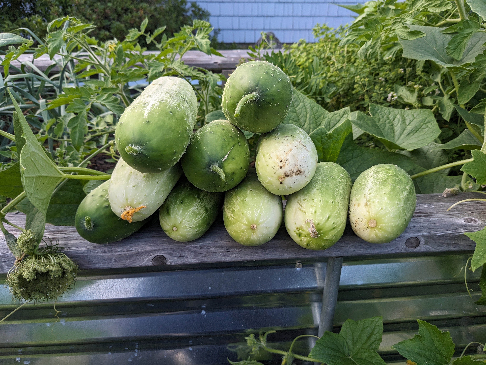
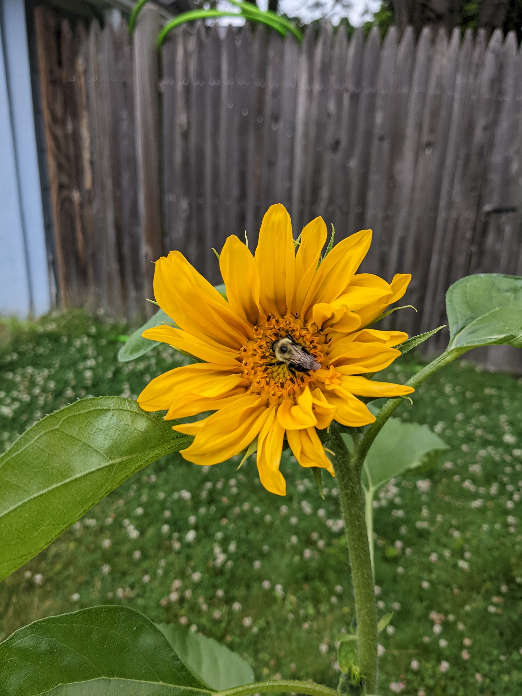

Gardening
Garden Setup

This is a picture of my raised garden bed in August 2023, featuring cucumbers, marigolds, basil, dill, and onions.
My friend and I built a 8' x 4' raised garden bed following this tutorial.
I installed a drip system, and in 2023 added a rain barrel to feed the drip system.

Plants In My Garden Over The Years
My Pickling Cucumbers were prolific in 2024. This is a picture of one of many cucumber harvests. It's important to keep harvesting them so they continue to grow!
The 2023 garden included:- Pickling Cucumbers - Pic-a-Little Hybrid
- Carrot Tendersweet (on seed tape)
- Bush Beans - Elegance
- Sweet Basil
- Thai Basil ("Siam Queen" Basil)
I also tried to grow pumpkins, but was unsuccessful in producing any.

In the fall of 2022, I planted garlic (Purple Glazer), and harvested all 8 bulbs in summer 2023.
 Clover was excited about the carrot harvest in October 2022. These were the Tendersweet Carrots, which I bought on seed tape.
Clover was excited about the carrot harvest in October 2022. These were the Tendersweet Carrots, which I bought on seed tape.

In March 2022 (pictured in May 2022 below), I planted a Trugold Peach Tree that looked like a twig. It's finally blossoming this year, and I'm so grateful I pruned it the past three years because it's shaped beautifully now. In this same picture are the sunflower seedlings that grew so well, and our neighbor's lilac bush, which I love.

The sunflower seedlings were started from seed ("Sunflower Super Snack") indoors.
The 2022 garden also included:- Bunching Onions - Evergreen White
- Dill Delight
- Spinach Acadia Hybrid (which I didn't harvest fast enough)
- Peanut - Bailey Virginia (which grew, but were eaten by the squirrels)
- Pumpkin plants (Connecticut Field - I didn't hand-fertilize them and so they didn't produce pumpkins)